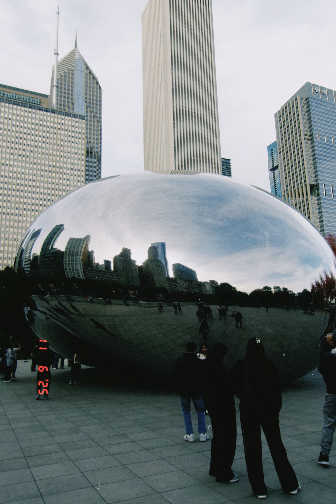
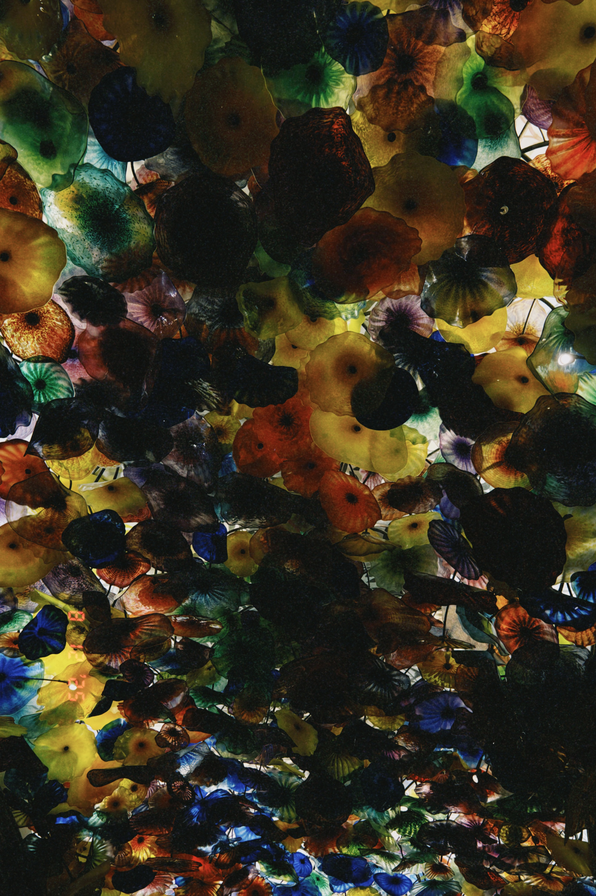
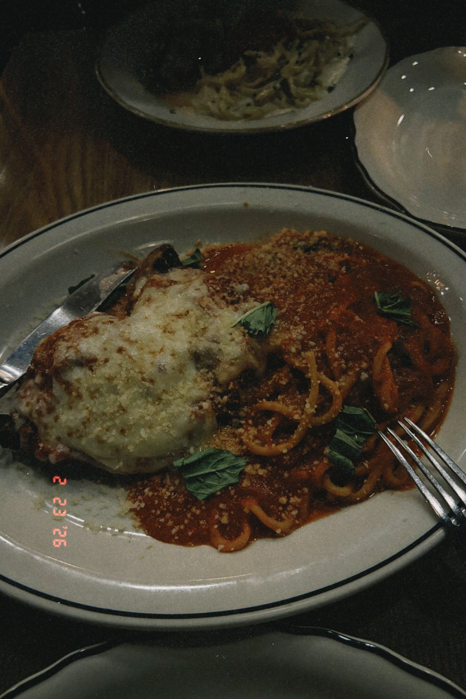
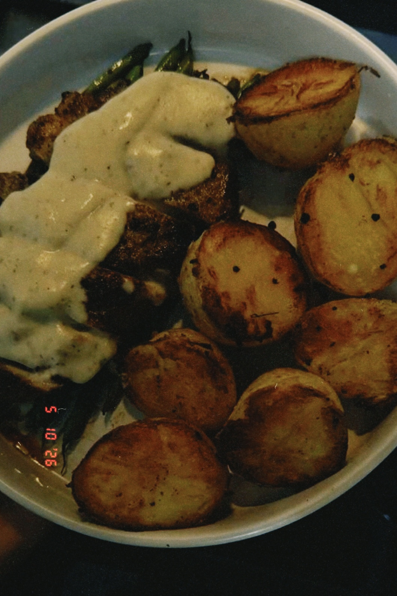
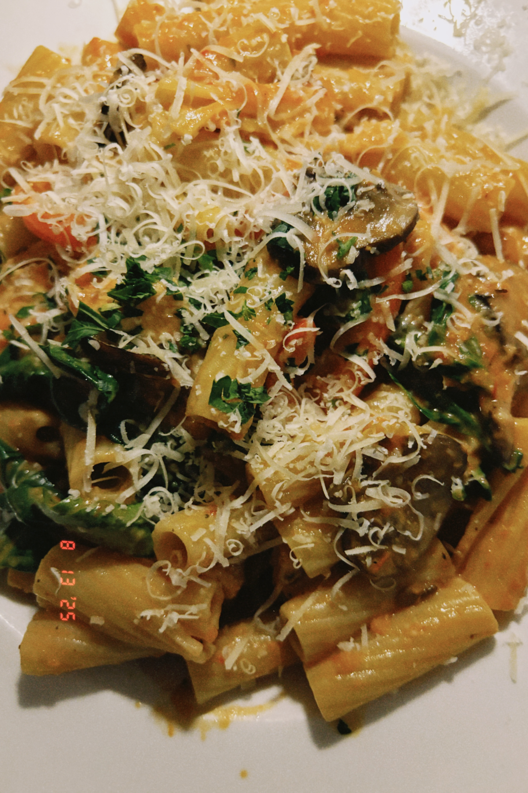

Life Outside Code
When I'm not building things, here's what fills my world.
Traveling
I'm passionate about learning new cultures, histories, geological formations, and local cuisines. My travels strike a balance between city sightseeing, exploring nature, and enjoying some downtime. Wherever I go, I always love capturing moments through photography.


Art and Museums
There is something quietly powerful about standing in front of a painting and feeling it ask you a question you didn't know you had. I seek out galleries and museums wherever I travel, drawn to the way art holds history, emotion, and imagination all at once. Every collection tells me something new about how people see the world, and occasionally, about how I see myself.


Food and Restaurants
I love trying out new foods and restaurants, from street food to fine dining. Food is one of the best ways to understand a culture, and I document every delicious discovery with photos.



Teaching and Mentoring
Through Women in Technology and Science, I design and deliver coding workshops for high school students and have mentored 15 students in building and deploying their own websites. I also serve as a Step-Up tutor, providing structured one-on-one math tutoring to elementary school students in under-resourced communities, helping them reach grade-level proficiency. Across both roles, I bring the same commitment: making complex things accessible and building confidence in students who need it most.